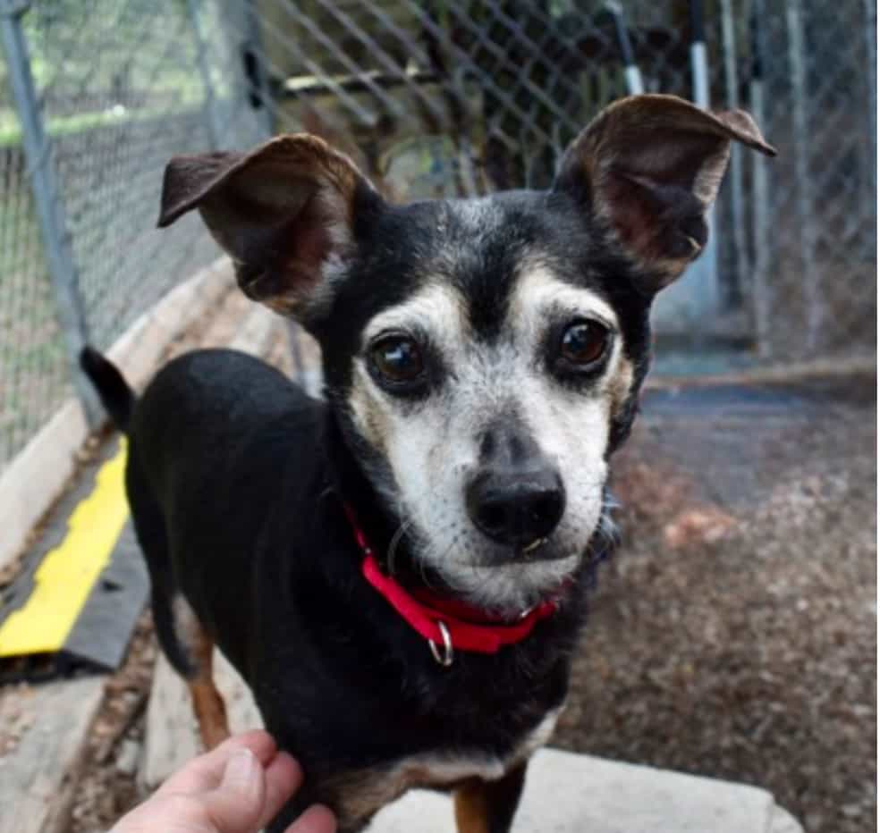

Timmy
At 10 years old and just 12 pounds, Timmy is a seasoned companion with a heart full of love. He and his best friend, Lulu, are experienced lap dogs who don’t take up much space but will fill your home with warmth and affection. Timmy is eligible for the Foster-to-Adopt program and the Senior for Senior discount, making him an even more lovable choice for a forever friend. Find him at Austin Humane Society